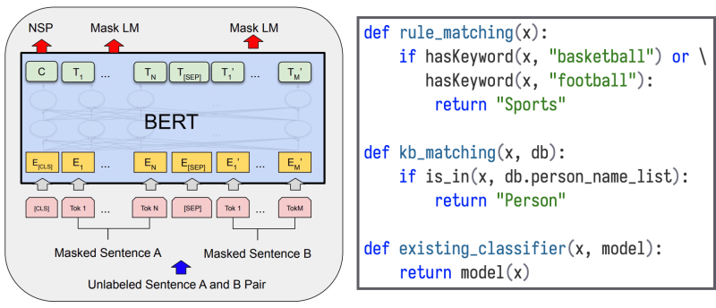
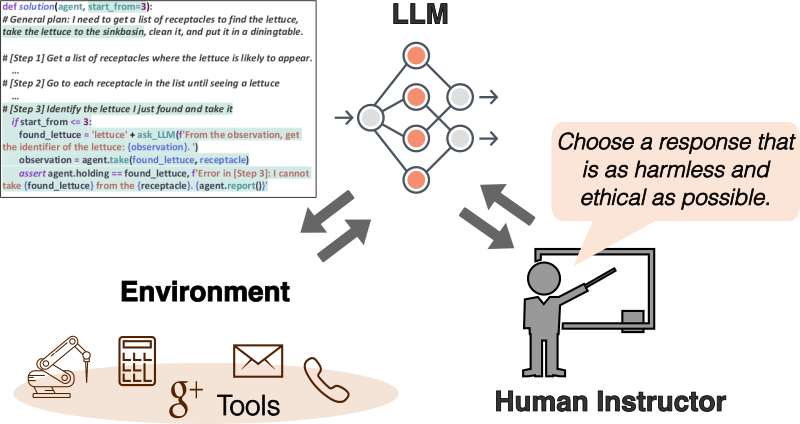
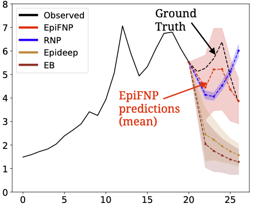

Chao Zhang
Table of Contents
Quick Links

|
James Edenfield Assistant Professor School of Computational Science and Engineering College of Computing Georgia Institute of Technology Office: CODA E1358B Address: 756 W Peachtree St NW, Atlanta, GA 30308 Email: chaozhang@gatech.edu |
Research
My research lies in the areas of data science, machine learning, and AI. My goal is to make it easier to build domain-customized foundation models and AI agents for task-solving and decision-making. My technical efforts centers on addressing key challenges in data efficiency, computation efficiency, and model robustness. On the application front, I am deeply interested in harnessing foundation models to advance AI for science.
Currently, I am working on the following themes:
- Data-Centric LLM – Adapting Large Language Models for target domains by addressing data scarcity challenges through data-efficient methods such as learning from weak supervision and active learning.
- LLM Agents & Reasoning – Improving LLM reasoning and planning abilities by enabling them to learn and evolve through interaction with external environments for feedback. The goal is to better adapt LLMs and enhance their reasoning capabilities without expensive manual curation of fine-tuning data.
- AI Alignment – Ensuring responsible and reliable deployment of AI through critical techniques including uncertainty quantification, enhancing LLM factuality, and improving LLM alignment.
- AI for Science – Leveraging foundation models and AI agents to accelerate scientific discovery in diverse fields such as material science, biomedical and life sciences, and urban science.
Acknowledgment: My work has been generously supported by research funding/gift from NSF (IIS CAREER-2144338, IIS-2106961, IIS-2008334), ONR MURI , Kolon, HomeDepot, ADP, and Adobe. My work has also been recognized by an NSF CAREER Award, a Facebook Faculty Award, an Amazon AWS Machine Learning Research Award, a Google Faculty Research Award, a Kolon Faculty Fellowship, an ACM SIGKDD Dissertation Runner-up Award, and several paper awards from IMWUT (UbiComp), ECML/PKDD, and ML4H.
I. Data-Centric LLM
We aim to adapt LLMs to various domains and complex tasks. A key bottleneck when adapting LLMs is data scarcity – the lack of high-quality, representative data for the target domain. We are tackling this bottleneck by developing methods for data-efficient LLM adaptation, including:
- Learning from Noisy Data and Weak Supervision: To address the lack of data for LLM fine-tuning, we explore using weaker forms of supervision signals that are easier to collect (e.g., labeling rules, LLM supervision, pseudo labels).
- DyGen: Fine-Tuning Language Models with Noisy Labels by Dynamics-Enhanced Generative Modeling, KDD'23
- Fine-Tuning Pre-trained Language Model with Weak Supervision, NAACL'21
- Sparse Conditional Hidden Markov Model for Weakly Supervised Named Entity Recognition, KDD'22
- Text Classification Using Label Names Only: A Language Model Self-Training Approach, EMNLP'20
- BOND: Bert-Assisted Open-Domain Named Entity Recognition with Distant Supervision, KDD'20
- Weakly-Supervised Neural Text Classification, CIKM'18
- More Efficient Data Curation: We develop techniques for fine-tuning LLMs with active learning, by strategically selecting data instances for curation to improve fine-tuning performance.
II. LLM Agents
We investigate improving LLM reasoning and planning abilities by enabling them to evolve through interaction with external environments for feedback. The goal is to better adapt LLMs and enhance their reasoning capabilities without expensive manual curation of fine-tuning data.
- Adapting LLM Agents with Universal Feedback Through Communication, NAACL'25
- Hephaestus: Improving Fundamental Agent Capabilities of Large Language Models through Continual Pre-Training, NAACL'25
- BBox-Adapter: Lightweight Adapting for Black-Box Large Language Models, ICML'24
- ToolChain*: Efficient Action Space Navigation in Large Language Models with A* Search, ICLR'24
- AdaPlanner: Adaptive Planning from Feedback with Language Models, NeurIPS'23
- ToolQA: A Dataset for LLM Question Answering with External Tools, NeurIPS'23
III. AI Alignment
We aim to develop AI systems that are not only capable but also trustworthy for deployment in various domains. We study the following topics in the space of trustworthy AI: uncertainty quantification, LLM factuality, and LLM alignment.
- Uncertainty Quantification for Deep Learning: Uncertainty-aware ML models are crucial for building trustworthy AI systems. Many deep learning models produce uncertainty-agnostic point estimates or miscalibrated distributions. We are addressing this issue by designing techniques for quantifying uncertainty in deep learning models. We also study decision-focused learning under uncertainty to make learning informed by downstream decision-making tasks.
- Diffusion Models as Constrained Samplers for Optimization with Unknown Constraints, AISTATS'25
- When Rigidity Hurts: Soft Consistency Regularization for Probabilistic Hierarchical Time Series Forecasting, KDD'23
- End-to-end Stochastic Programming with Energy-based Model, NeurIPS'22
- When in Doubt: Neural Non-Parametric Uncertainty Quantification for Epidemic Forecasting, NeurIPS'21
- SDE-Net: Equipping Deep Neural Networks with Uncertainty Estimates, ICML'20
- RDeepSense: Reliable Deep Mobile Computing Models with Uncertainty Estimations, UbiComp'18
- LLM Factuality and RAG: We develop methods to enhance the factual accuracy of LLMs through more robust and intelligent retrieval-augmented generation (RAG) and context ranking.
- RankRAG: Unifying Retrieval-Augmented Generation and Context Ranking in LLMs, NeurIPS'24
- ARL2: Aligning Retrievers with Black-box Large Language Models via Self-guided Adaptive Relevance Labeling, ACL'24
- COCO-DR: Combating the Distribution Shift in Zero-Shot Dense Retrieval with Contrastive and Distributional Robust Learning, EMNLP'22
- LLM Alignment and Robust Fine-Tuning: We investigate robust fine-tuning methods for LLMs to improve generalization on out-of-distribution data, as well as identifying vulnerabilities in LLMs and scalably aligning them:
- Self-Generated Critiques Boost Reward Modeling for Language Models, NAACL'25
- Aligning Large Language Models with Representation Editing: A Control Perspective, NeurIPS'24
- Large Language Model as Attributed Training Data Generator: A Tale of Diversity and Bias, NeurIPS'23
- Calibrated Language Model Fine-Tuning for In- and Out-of-Distribution Data, EMNLP'20
IV. AI for Science
We aim to leverage AI and foundation models for advancing scientific discovery. We develop domain-specific foundation models and LLM agents for different scientific domains. On the application side, we collaborate with domain-experts to advance scientific discovery in material design, biomedical and life science, and urban science:
- AI for Material Science:
- Efficient Evolutionary Search Over Chemical Space with Large Language Models, ICLR'25
- LLMatDesign: Autonomous Materials Discovery with Large Language Models, preprint
- May the Force be with You: Unified Force-Centric Pre-Training for 3D Molecular Conformations, NeurIPS'23
- Autoregressive Diffusion Model for Graph Generation, ICML'23
- MUBen: Benchmarking the Uncertainty of Pre-Trained Models for Molecular Property Prediction, TMLR'24
- POLYIE: A Dataset of Information Extraction from Polymer Material Scientific Literature, NAACL'24
- AI for Biomedical and Life Science:
- Contrastive Fitness Learning: Reprogramming Protein Language Models for Low-N Learning of Protein Fitness Landscape, RECOMB'24
- TransEHR: Self-Supervised Transformer for Clinical Time Series Data, ML4H'23
- When in Doubt: Neural Non-Parametric Uncertainty Quantification for Epidemic Forecasting, NeurIPS'21
- ReSel: N-ary Relation Extraction from Scientific Text and Tables by Learning to Retrieve and Select, EMNLP'22
- AI for Urban Science:
Awards
- 2024 GaTech CoC Outstanding Junior Faculty Award
- 2022 NSF Career Award
- 2022 ML4H Outstanding Paper Award
- 2021 Facebook Faculty Research Award
- 2021 Kolon Faculty Fellowship
- 2020 Amazon AWS Machine Learning Research Award
- 2020 Google Faculty Research Award
- 2019 ACM SIGKDD Dissertation Award Runner-up
- 2018 ACM IMWUT Distinguished Paper Award
- 2015 ECML/PKDD Best Student Paper Runner-up Award
- 2013 Chiang Chen Overseas Graduate Fellowship
Publications
(* denotes equal contribution)
2025
- Hephaestus: Improving Fundamental Agent Capabilities of Large Language Models through Continual Pre-Training
Yuchen Zhuang, Jingfeng Yang, Haoming Jiang, Xin Liu, Kewei Cheng, Sanket Lokegaonkar, Yifan Gao, Qing Ping, Tianyi Liu, Binxuan Huang, Zheng Li, Zhengyang Wang, Pei Chen, Ruijie Wang, Rongzhi Zhang, Nasser Zalmout, Priyanka Nigam, Bing Yin, Chao Zhang
Annual Conference of the North American Chapter of the Association for Computational Linguistics (NAACL), 2025
- Adapting LLM Agents with Universal Communication Feedback
Kuan Wang, Yadong Lu, Michael Santacroce, Yeyun Gong, Chao Zhang, Yelong Shen
Annual Conference of the North American Chapter of the Association for Computational Linguistics (NAACL), 2025 - Self-Generated Critiques Boost Reward Modeling for Language Models
Yue Yu, Zhengxing Chen, Aston Zhang, Liang Tan, Chenguang Zhu, Richard Yuanzhe Pang, Yundi Qian, Xuewei Wang, Suchin Gururangan, Chao Zhang, Melanie Kambadur, Dhruv Mahajan, Rui Hou
Annual Conference of the North American Chapter of the Association for Computational Linguistics (NAACL), 2025
- Efficient Evolutionary Search Over Chemical Space with Large Language Models
Haorui Wang, Marta Skreta, Cher Tian Ser, Wenhao Gao, Lingkai Kong, Felix Strieth-Kalthoff, Chenru Duan, Yuchen Zhuang, Yue Yu, Yanqiao Zhu, Yuanqi Du, Alan Aspuru-Guzik, Kirill Neklyudov, Chao Zhang
International Conference on Learning Representations (ICLR), 2025 - Ensembles of Low-Rank Expert Adapters
Yinghao Li, Vianne R. Gao, Chao Zhang, MohamadAli Torkamani
International Conference on Learning Representations (ICLR), 2025 - Diffusion Models as Constrained Samplers for Optimization with Unknown Constraints
Lingkai Kong, Yuanqi Du, Wenhao Mu, Kirill Neklyudov, Valentin De Bortoli, Dongxia Wu, Haorui Wang, Aaron M Ferber, Yian Ma, Carla P Gomes, Chao Zhang
International Conference on Artificial Intelligence and Statistics (AISTATS), 2025
2024
- TPD: Enhancing Student Language Model Reasoning via Principle Discovery and Guidance
Haorui Wang, Rongzhi Zhang, Yinghao Li, Lingkai Kong, Yuchen Zhuang, Xiusi Chen, Chao Zhang
Conference on Language Modeling (COLM), 2024 - Aligning Large Language Models with Representation Editing: A Control Perspective
Lingkai Kong, Haorui Wang, Wenhao Mu, Yuanqi Du, Yuchen Zhuang, Yifei Zhou, Yue Song, Rongzhi Zhang, Kai Wang, Chao Zhang
Annual Conference on Neural Information Processing Systems (NeurIPS), 2024 - RankRAG: Unifying Retrieval-Augmented Generation and Context Ranking in LLMs
Yue Yu, Wei Ping, Zihan Liu, Boxin Wang, Jiaxuan You, Chao Zhang, Mohammad Shoeybi, Bryan Catanzaro
Annual Conference on Neural Information Processing Systems (NeurIPS), 2024 - HYDRA: Model Factorization Framework for Black-Box LLM Personalization
Yuchen Zhuang, Haotian Sun, Yue Yu, Rushi Qiang, Qifan Wang, Chao Zhang, Bo Dai
Annual Conference on Neural Information Processing Systems (NeurIPS), 2024 - Time-MMD: A New Multi-Domain Multimodal Dataset for Time Series Analysis
Haoxin Liu, Shangqing Xu, Zhiyuan Zhao, Lingkai Kong, Harshavardhan Kamarthi, Aditya B. Sasanur, Megha Sharma, Jiaming Cui, Qingsong Wen, Chao Zhang, B. Aditya Prakash
Annual Conference on Neural Information Processing Systems (NeurIPS), 2024 - ToolChain*: Efficient Action Space Navigation in Large Language Models with A* Search
Yuchen Zhuang, Xiang Chen, Tong Yu, Saayan Mitra, Victor Bursztyn, Ryan A. Rossi, Somdeb Sarkhel, Chao Zhang
International Conference on Learning Representations (ICLR), 2024 - BBox-Adapter: Lightweight Adapting for Black-Box Large Language Models
Haotian Sun, Yuchen Zhuang, Wei Wei, Chao Zhang, Bo Dai
International Conference on Machine Learning (ICML), 2024 - Time-Series Forecasting for Out-of-Distribution Generalization Using Invariant Learning
Haoxin Liu, Harshavardhan Kamarthi, Lingkai Kong, Zhiyuan Zhao, Chao Zhang, B. Aditya Prakash
International Conference on Machine Learning (ICML), 2024 - Knowledge Distillation with Perturbed Loss: From a Vanilla Teacher to a Proxy Teacher
Rongzhi Zhang, Jiaming Shen, Tianqi Liu, Jialu Liu, Michael Bendersky, Marc Najork, Chao Zhang
ACM SIGKDD Conference on Knowledge Discovery and Pattern Mining (KDD), 2024 - Two Birds with One Stone: Enhancing Calibration and Interpretability with Graph Functional Neural Process
Lingkai Kong*, Haotian Sun*, Yuchen Zhuang, Haorui Wang and Chao Zhang
International Conference on Artificial Intelligence and Statistics (AISTATS), 2024
- Towards Modeling Uncertainties of Self-explaining Neural Networks
Wei Qian, Chenxu Zhao, Yangyi Li, Fenglong Ma, Chao Zhang, Mengdi Huai
AAAI Conference on Artificial Intelligence (AAAI), 2024 - Contrastive Fitness Learning: Reprogramming Protein Language Models for Low-N Learning of Protein Fitness Landscape
Junming Zhao, Chao Zhang, and Yunan Luo
Research in Computational Molecular Biology (RECOMB), 2024 - MUBen: Benchmarking the Uncertainty of Pre-Trained Models for Molecular Property Prediction
Yinghao Li, Lingkai Kong, Yuanqi Du, Yue Yu, Yuchen Zhuang, Wenhao Mu, Chao Zhang
Transactions on Machine Learning Research (TMLR), 2024 - ARL2: Aligning Retrievers with Black-box Large Language Models via Self-guided Adaptive Relevance Labeling
LingXi Zhang, Yue Yu, Kuan Wang, Chao Zhang
Annual Meeting of the Association for Computational Linguistics (ACL), 2024 - Explanation-aware Soft Ensemble Empowers Large Language Model In-context Learning
Yue Yu, Jiaming Shen, Tianqi Liu, Zhen Qin, Jing Nathan Yan, Jialu Liu, Chao Zhang, Michael Bendersky
Annual Meeting of the Association for Computational Linguistics (ACL), 2024 - PLaD: Preference-based Large Language Model Distillation with Pseudo-Preference Pairs
Rongzhi Zhang, Jiaming Shen, Tianqi Liu, Haorui Wang, Zhen Qin, Feng Han, Jialu Liu, Simon Baumgartner, Michael Bendersky, Chao Zhang
Annual Meeting of the Association for Computational Linguistics (ACL-Findings), 2024 - ProgGen: Generating Named Entity Recognition Datasets Step-by-step with Self-Reflexive Large Language Models
Yuzhao Heng, Chunyuan Deng, Yitong Li, Yue Yu, Yinghao Li, Rongzhi Zhang, Chao Zhang
Annual Meeting of the Association for Computational Linguistics (ACL-Findings), 2024 - Data Diversity Matters for Robust Instruction Tuning
Alexander Bukharin, Shiyang Li, Zhengyang Wang, Jingfeng Yang, Bing Yin, Xian Li, Chao Zhang, Tuo Zhao, Haoming Jiang
Findings of Conference on Empirical Methods in Natural Language Processing (EMNLP-Findings), 2024 - A Simple but Effective Approach to Improve Structured Language Model Output for Information Extraction
Yinghao Li, Rampi Ramprasad, Chao Zhang
Findings of Conference on Empirical Methods in Natural Language Processing (EMNLP-Findings), 2024 - BMRetriever: Tuning Large Language Models as Better Biomedical Text Retrievers
Ran Xu, Wenqi Shi, Yue Yu, Yuchen Zhuang, Yanqiao Zhu, May Dongmei Wang, Joyce C. Ho, Chao Zhang, Carl Yang
Conference on Empirical Methods in Natural Language Processing (EMNLP), 2024 - Accelerating Materials Discovery for Polymer Solar Cells: Data-driven Insights Enabled by Natural Language Processing
Pranav Shetty, Aishat Adeboye, Sonakshi Gupta, Chao Zhang, Rampi Ramprasad
Chemistry of Materials 36 (16), 2024 - POLYIE: A Dataset of Information Extraction from Polymer Material Scientific Literature
Jerry Junyang Cheung, Yuchen Zhuang, Yinghao Li, Pranav Shetty, Wantian Zhao, Sanjeev Grampurohit, Rampi Ramprasad, Chao Zhang
Annual Conference of the North American Chapter of the Association for Computational Linguistics (NAACL), 2024 - Assessing Logical Puzzle Solving in Large Language Models: Insights from a Minesweeper Case Study
Yinghao Li, Haorui Wang, Chao Zhang
Annual Conference of the North American Chapter of the Association for Computational Linguistics (NAACL), 2024 - HiGen: Hierarchy-Aware Sequence Generation for Hierarchical Text Classification
Vidit Jain, Mukund Rungta, Yuchen Zhuang, Yue Yu, Zeyu Wang, Mu Gao, Jeffrey Skolnick, Chao Zhang
Conference of the European Chapter of the Association for Computational Linguistics (EACL), 2024
2023
- AdaPlanner: Adaptive Planning from Feedback with Language Models
Haotian Sun, Yuchen Zhuang, Lingkai Kong, Bo Dai, Chao Zhang
Annual Conference on Neural Information Processing Systems (NeurIPS), 2023 - ToolQA: A Dataset for LLM Question Answering with External Tools
Yuchen Zhuang, Yue Yu, Kuan Wang, Haotian Sun, Chao Zhang
Annual Conference on Neural Information Processing Systems (NeurIPS), 2023 - Large Language Model as Attributed Training Data Generator: A Tale of Diversity and Bias
Yue Yu, Yuchen Zhuang, Jieyu Zhang, Yu Meng, Alexander Ratner, Ranjay Krishna, Jiaming Shen, Chao Zhang
Annual Conference on Neural Information Processing Systems (NeurIPS), 2023 - May the Force be with You: Unified Force-Centric Pre-Training for 3D Molecular Conformations
Rui Feng, Qi Zhu, Huan Tran, Binghong Chen, Aubrey Toland, Rampi Ramprasad, Chao Zhang
Annual Conference on Neural Information Processing Systems (NeurIPS), 2023 - Robust Multi-Agent Reinforcement Learning via Adversarial Regularization: Theoretical Foundation and Stable Algorithms
Alexander Bukharin, Yan Li, Yue Yu, Qingru Zhang, Zhehui Chen, Simiao Zuo, Chao Zhang, Songan Zhang, Tuo Zhao
Annual Conference on Neural Information Processing Systems (NeurIPS), 2023 - Uncertainty Quantification in Deep Learning
Lingkai Kong, Harshavardhan Kamarthi, Peng Chen, B. Aditya Prakash, Chao Zhang
ACM SIGKDD Conference on Knowledge Discovery and Pattern Mining (KDD), 2023 - DyGen: Fine-Tuning Language Models with Noisy Labels by Dynamics-Enhanced Generative Modeling
Yuchen Zhuang, Yue Yu, Lingkai Kong, Xiang Chen, Chao Zhang
ACM SIGKDD Conference on Knowledge Discovery and Pattern Mining (KDD), 2023 - Local Boosting for Weakly-Supervised Learning
Rongzhi Zhang, Yue Yu, Jiaming Shen, Xiquan Cui, Chao Zhang
ACM SIGKDD Conference on Knowledge Discovery and Pattern Mining (KDD), 2023 - When Rigidity Hurts: Soft Consistency Regularization for Probabilistic Hierarchical Time Series Forecasting
Harshavardhan Kamarthi, Lingkai Kong, Alexander Rodríguez, Chao Zhang, B. Aditya Prakash
ACM SIGKDD Conference on Knowledge Discovery and Pattern Mining (KDD), 2023 - Autoregressive Diffusion Model for Graph Generation
Lingkai Kong, Jiaming Cui, Haotian Sun, Yuchen Zhuang, B. Aditya Prakash, Chao Zhang
International Conference on Machine Learning (ICML), 2023 - SMURF-THP: Score Matching-based UnceRtainty quantiFication for Transformer Hawkes Process
Zichong Li, Yanbo Xu, Simiao Zuo, Haoming Jiang, Chao Zhang, Tuo Zhao, Hongyuan Zha
International Conference on Machine Learning (ICML), 2023 - Cold-start Data Selection for Better Few-shot Fine-tuning of Pretrained Language Models
Yue Yu, Rongzhi Zhang, Ran Xu, Jieyu Zhang, Jiaming Shen and Chao Zhang
Annual Meeting of the Association for Computational Linguistics (ACL), 2023 - Zero-Shot Text Classification by Training Data Creation with Progressive Dense Retrieval
Yue Yu, Yuchen Zhuang, Rongzhi Zhang, Yu Meng, Jiaming Shen and Chao Zhang
Findings of Annual Meeting of the Association for Computational Linguistics (ACL), 2023 - Graph Reasoning for Question Answering with Triplet Retrieval
Shiyang Li, Yifan Gao, Haoming Jiang, Qingyu Yin, Zheng Li, Xifeng Yan, Chao Zhang and Bing Yin
Findings of Annual Meeting of the Association for Computational Linguistics (ACL), 2023 - Extracting Shopping Interest-Related Product Types from the Web
Yinghao Li, Colin Lockard, Prashant Shiralkar and Chao Zhang
Findings of Annual Meeting of the Association for Computational Linguistics (ACL), 2023 - Context-Aware Query Rewriting for Improving Users' Search Experience on E-commerce Websites
Simiao Zuo, Qingyu Yin, Haoming Jiang, Shaohui Xi, Bing Yin, Chao Zhang, Tuo Zhao
Annual Meeting of the Association for Computational Linguistics (ACL), 2023 - Improving Consistency for Text Summarization with Energy Functions
Qi Zeng, Qingyu Yin, Zheng Li, Yifan Gao, Sreyashi Nag, Zhengyang Wang, Bing Yin, Heng Ji, Chao Zhang
Findings of Conference on Empirical Methods in Natural Language Processing (EMNLP-Findings), 2023 - Knowledge-Selective Pretraining for Attribute Value Extraction
Hui Liu, Qingyu Yin, Zhengyang Wang, Chenwei Zhang, Haoming Jiang, Yifan Gao, Zheng Li, Xian Li, Chao Zhang, Bing Yin, William Yang Wang, Xiaodan Zhu
Findings of Conference on Empirical Methods in Natural Language Processing (EMNLP-Findings), 2023 - Unsupervised Event Chain Mining from Multiple Documents
Yizhu Jiao, Ming Zhong, Jiaming Shen, Yunyi Zhang, Chao Zhang and Jiawei Han
The Web Conference (WWW), 2023 - Mutually-paced Knowledge Distillation for Cross-lingual Temporal Knowledge Graph Reasoning
Ruijie Wang, Zheng Li, Jingfeng Yang, Tianyu Cao, Chao Zhang, Bing Yin, Tarek Abdelzaher
The Web Conference (WWW), 2023
- TransEHR: Self-Supervised Transformer for Clinical Time Series Data
Yanbo Xu, Shangqing Xu, Manav Ramprasad, Alexey Tumanov, Chao Zhang
Machine Learning for Health (ML4H), 2023 - G-STO: Sequential Main Shopping Intention Detection via Graph-Regularized Stochastic Transformer
Yuchen Zhuang, Xin Shen, Yan Zhao, Chaosheng Dong, Ming Wang, Jin Li and Chao Zhang
ACM International Conference on Information and Knowledge Management (CIKM), 2023 - Neighborhood-regularized Self-Training for Learning with Few Labels
Ran Xu, Yue Yu, Hejie Cui, Xuan Kan, Yanqiao Zhu, Joyce C. Ho, Chao Zhang and Carl Yang.
AAAI Conference on Artificial Intelligence (AAAI), 2023. - Accelerated Scheme to Predict Ring-Opening Polymerization Enthalpy: Simulation-Experimental Data Fusion and Multitask Machine Learning
Aubrey Toland, Huan Tran, Lihua Chen, Yinghao Li, Chao Zhang, Will Gutekunst, and Rampi Ramprasad
Journal of Physical Chemistry A, 2023 - A General-Purpose Material Property Data Extraction Pipeline from Large Polymer Corpora Using Natural Language Processing
Pranav Shetty, Arunkumar Chitteth Rajan, Christopher Kuenneth, Sonkakshi Gupta, Lakshmi Prerana Panchumarti, Lauren Holm, Chao Zhang, Rampi Ramprasad
npj Comput Materials 9(52), 2023
2022
- End-to-end Stochastic Optimization with Energy-based Model
Lingkai Kong, Jiaming Cui, Yuchen Zhuang, Rui Feng, B. Aditya Prakash, Chao Zhang
Annual Conference on Neural Information Processing Systems (NeurIPS), 2022
(Selected as Oral) - UnfoldML: Cost-Aware and Uncertainty-Based Dynamic 2D Prediction for Multi-Stage Classification
Yanbo Xu, Alind Khare, Glenn Matlin, Monish Ramadoss, Rishikesan Kamaleswaran, Chao Zhang, Alexey Tumanov
Annual Conference on Neural Information Processing Systems (NeurIPS), 2022 - Shift-Robust Node Classification via Graph Clustering Co-training
Qi Zhu, Chao Zhang, Chanyoung Park, Carl Yang, Jiawei Han
NeurIPS GLFrontiers Workshop, 2022 - Sparse Conditional Hidden Markov Model for Weakly Supervised Named Entity Recognition
Yinghao Li, Le Song, Chao Zhang
ACM SIGKDD Conference on Knowledge Discovery and Pattern Mining (KDD), 2022 - Adaptive Multi-view Rule Discovery for Weakly-Supervised Compatible Products Prediction
Rongzhi Zhang, Rebecca West, Xiquan Cui, Chao Zhang
ACM SIGKDD Conference on Knowledge Discovery and Pattern Mining (KDD), 2022 - CAMUL: Calibrated and Accurate Multi-view Time-Series Forecasting
Harshavardhan Kamarthi, Lingkai Kong, Alexander Rodríguez, Chao Zhang and B. Aditya Prakash
The Web Conference (WWW), 2022 - Precise Clinical Predictions via Counterfactual and Factual Reasoning over Hypergraphs of Electronic Health Records
Ran Xu, Yue Yu, Chao Zhang, Mohammed K Ali, Joyce Ho, Carl Yang
Machine Learning for Health (ML4H), 2022
(Outstanding Paper Award) - Deep DAG Learning on Brain Networks for fMRI Analysis
Yue Yu, Xuan Kan, Hejie Cui, Ran Xu, Yujia Zheng, Xiangchen Song, Yanqiao Zhu, Kun Zhang, Razieh Nabi, Ying Guo, Chao Zhang, Carl Yang
Proceedings of the IEEE International Symposium on Biomedical Imaging (ISBI), 2022 - Rule-Enhanced Active Learning for Semi-Automated Weak Supervision
David Kartchner, Davi Nakajima An, Wendi Ren, Chao Zhang, Cassie S. Mitchell
AI 3(1), 211-228, 2022 - PRBoost: Prompt-Based Rule Discovery and Boosting for Interactive Weakly-Supervised Learning
Rongzhi Zhang, Yue Yu, Shetty Pranav, Le Song and Chao Zhang
Annual Meeting of the Association for Computational Linguistics (ACL), 2022. - ReSel: N-ary Relation Extraction from Scientific Text and Tables by Learning to Retrieve and Select
Yuchen Zhuang, Yinghao Li, Junyang Zhang, Yue Yu, Yingjun Mou, Xiang Chen, Le Song and Chao Zhang
Conference on Empirical Methods in Natural Language Processing (EMNLP), 2022 - COCO-DR: Combating the Distribution Shift in Zero-Shot Dense Retrieval with Contrastive and Distributional Robust Learning
Yue Yu, Chenyan Xiong, Si Sun, Chao Zhang and Arnold Overwijk
Conference on Empirical Methods in Natural Language Processing (EMNLP), 2022 - CERES: Pretraining of Graph-Conditioned Transformer for Semi-Structured Session Data
Rui Feng, Chen Luo, Qingyu Yin, Bing Yin, Tuo Zhao, Chao Zhang
Annual Conference of the North American Chapter of the Association for Computational Linguistics (NAACL), 2022 - AcTune: Uncertainty-Aware Active Self-Training for Active Fine-Tuning of Pretrained Language Models
Yue Yu, Lingkai Kong, Jieyu Zhang, Rongzhi Zhang, Chao Zhang
Annual Conference of the North American Chapter of the Association for Computational Linguistics (NAACL), 2022 - Self-Training with Differentiable Teacher
Simiao Zuo, Yue Yu, Chen Liang, Haoming Jiang, Siawpeng Er, Chao Zhang, Tuo Zhao, Hongyuan Zha
Findings of Annual Conference of the North American Chapter of the Association for Computational Linguistics (NAACL-Findings), 2022
2021
- When in Doubt: Neural Non-Parametric Uncertainty Quantification for Epidemic Forecasting
Harshavardhan Kamarthi, Lingkai Kong, Alexander Rodríguez, Chao Zhang, B. Aditya Prakash
Annual Conference on Neural Information Processing Systems (NeurIPS), 2021 - Transfer Learning of Graph Neural Networks with Ego-graph Information Maximization
Qi Zhu, Carl Yang, Yidan Xu, Haonan Wang, Chao Zhang, and Jiawei Han
Annual Conference on Neural Information Processing Systems (NeurIPS), 2021 - BERTifying Hidden Markov Models for Multi-Source Weakly Supervised Named Entity Recognition
Yinghao Li, Pranav Shetty, Lucas Liu, Chao Zhang, Le Song
Annual Meeting of the Association for Computational Linguistics (ACL), 2021 - Fine-Tuning Pre-trained Language Model with Weak Supervision: A Contrastive-Regularized Self-Training Approach
Yue Yu*, Simiao Zuo*, Haoming Jiang, Wendi Ren, Tuo Zhao, Chao Zhang
Annual Conference of the North American Chapter of the Association for Computational Linguistics (NAACL), 2021 - Learning from Language: Low-shot Named Entity Recognition via Decomposed Framework
Yaqing Wang, Haoda Chu, Chao Zhang, Jing Gao
Findings of Conference on Empirical Methods in Natural Language Processing (EMNLP-Findings), 2021 - Semantics-Aware Hidden Markov Model for Human Mobility
Hongzhi Shi, Yong Li, Hancheng Cao, Xiangxin Zhou, Chao Zhang, Vassilis Kostakos
IEEE Transactions on Knowledge and Data Engineering (TKDE), 2021. - Supervised Machine Learning-based Wind Prediction to Enable Real-Time Flight Path Planning
Jung-Hyun Kim, Chao Zhang, Simon I. Briceno and Dimitri N. Mavris
AIAA Scitech Forum, 2021 - SumGNN: Multi-typed Drug Interaction Prediction via Efficient Knowledge Graph Summarization
Yue Yu*, Kexin Huang*, Chao Zhang, Lucas M. Glass, Jimeng Sun, Cao Xiao
Bioinformatics, 2021
2020
- T-GCN: A Temporal Graph Convolutional Network for Traffic Prediction
Ling Zhao, Yujiao Song, Chao Zhang, Yu Liu, Pu Wang, Tao Lin, Min Deng, Haifeng Li.
IEEE Transactions on Intelligent Transportation Systems (T-ITS), 21(9), 3848–3858, 2020 - A Linear Time Approach to Computing Time Series Similarity based on Deep Metric Learning
Di Yao, Gao Cong, Chao Zhang, Xuying Meng, Rongchang Duan, Jingping Bi
IEEE Transactions on Knowledge and Data Engineering (TKDE), 2020 - SDE-Net: Equipping Deep Neural Networks with Uncertainty Estimates
Lingkai Kong, Jimeng Sun, Chao Zhang.
International Conference on Machine Learning (ICML), 2020 - STEAM: Self-Supervised Taxonomy Expansion with Mini-Paths
Yue Yu, Yinghao Li, Jiaming Shen, Hao Feng, Jimeng Sun and Chao Zhang.
ACM SIGKDD Conference on Knowledge Discovery and Pattern Mining (KDD), 2020 - BOND: Bert-Assisted Open-Domain Named Entity Recognition with Distant Supervision
Chen Liang*, Yue Yu*, Haoming Jiang, Siawpeng Er, Ruijia Wang, Tuo Zhao and Chao Zhang
ACM SIGKDD Conference on Knowledge Discovery and Pattern Mining (KDD), 2020 - LogPar: Logistic PARAFAC2 Factorization for Temporal Binary Data with Missing Values
Kejing Yin, Ardavan Afshar, Joyce Ho, William Cheung, Chao Zhang and Jimeng Sun
ACM SIGKDD Conference on Knowledge Discovery and Pattern Mining (KDD), 2020 - Hierarchical Topic Mining via Joint Spherical Tree and Text Embedding
Yu Meng, Yunyi Zhang, Jiaxin Huang, Yu Zhang, Chao Zhang and Jiawei Han
ACM SIGKDD Conference on Knowledge Discovery and Pattern Mining (KDD), 2020 - paper2repo: GitHub Repository Recommendation for Academic Papers
Huajie Shao, Dachun Sun, Jiahao Wu, Zecheng Zhang, Aston Zhang, Shuochao Yao, Shengzhong Liu, Tianshi Wang, Chao Zhang and Tarek Abdelzaher.
The Web Conference (WWW), 2020 - Discriminative Topic Mining via Category-Name Guided Text Embedding
Yu Meng, Jiaxin Huang, Guangyuan Wang, Zihan Wang, Chao Zhang, Yu Zhang and Jiawei Han.
The Web Conference (WWW), 2020 - ReGAL: Rule-Generative Active Learning for Model-in-the-Loop Weak Supervision
David Kartchner, Wendi Ren, Davi Nakajima An, Chao Zhang, Cassie Mitchell.
NeurIPS 2020 HAMLETS workshop on Human and Model in the Loop Evaluation and Training Strategies - Calibrated Language Model Fine-Tuning for In- and Out-of-Distribution Data
Lingkai Kong, Haoming Jiang, Yuchen Zhuang, Jie Lyu, Tuo Zhao and Chao Zhang.
Conference on Empirical Methods in Natural Language Processing (EMNLP), 2020 - Text Classification Using Label Names Only: A Language Model Self-Training Approach
Yu Meng, Yunyi Zhang, Jiaxin Huang, Chenyan Xiong, Heng Ji, Chao Zhang, Jiawei Han.
Conference on Empirical Methods in Natural Language Processing (EMNLP), 2020 - SeqMix: Augmenting Active Sequence Labeling via Sequence Mixup
Rongzhi Zhang, Yue Yu and Chao Zhang.
Conference on Empirical Methods in Natural Language Processing (EMNLP), 2020 - Denoising Multi-Source Weak Supervision for Neural Text Classification
Wendi Ren, Yinghao Li, Hanting Su, David Kartchner, Cassie Mitchell, and Chao Zhang.
Findings of Conference on Empirical Methods in Natural Language Processing (EMNLP-Findings), 2020 - Joint Aspect-Sentiment Analysis with Minimal User Guidance
Honglei Zhuang, Fang Guo, Chao Zhang, Liyuan Liu and Jiawei Han.
ACM SIGIR Conference on Research and Development in Information Retrieval (SIGIR), 2020.
2019
- Multidimensional Mining of Massive Text Data
Chao Zhang, Jiawei Han.
Morgan & Claypool Publishers, 2019 - Spherical Text Embedding
Yu Meng, Jiaxin Huang, Guangyuan Wang, Chao Zhang, Honglei Zhuang, Lance Kaplan, Jiawei Han.
Annual Conference on Neural Information Processing Systems (NeurIPS), 2019 - State-Sharing Sparse Hidden Markov Models for Personalized Sequences
Hongzhi Shi, Chao Zhang, Mingquan Yao, Yong Li, Funing Sun, Depeng Jin.
ACM SIGKDD Conference on Knowledge Discovery and Pattern Mining (KDD), 2019 - TopicMine: User-Guided Topic Mining by Category-Oriented Embedding
Yu Meng, Jiaxin Huang, Zihan Wang, Chenyu Fan, Guangyuan Wang, Chao Zhang, Jingbo Shang, Lance Kaplan, Jiawei Han.
ACM SIGKDD Conference on Knowledge Discovery and Pattern Mining (KDD), 2019
(Demo) - CubeNet: Multi-Facet Hierarchical Heterogeneous Network Construction, Analysis, and Mining
Carl Yang, Dai Teng, Siyang Liu, Sayantani Basu, Jieyu Zhang, Jiaming Shen, Chao Zhang, Jingbo Shang, Lance Kaplan, Timothy Harratty, and Jiawei Han.
ACM SIGKDD Conference on Knowledge Discovery and Pattern Mining (KDD), 2019
(Demo) - A Gradual, Semi-Discrete Approach to Generative Network Training via Explicit Wasserstein Minimization
Yucheng Chen, Matus Telgarsky, Chao Zhang, Bolton Bailey, Daniel Hsu, Jian Peng.
International Conference on Machine Learning (ICML), 2019 - Weakly-Supervised Hierarchical Text Classification
Yu Meng, Jiaming Shen, Chao Zhang, Jiawei Han.
AAAI Conference on Artificial Intelligence (AAAI), 2019 - Computing Trajectory Similarity in Linear Time: A Generic Seed-Guided Neural Metric Learning Approach
Di Yao, Gao Cong, Chao Zhang, Jingping Bi.
IEEE International Conference on Data Engineering (ICDE), 2019 - DPLink: User Identity Linkage via Deep Neural Network From Heterogeneous Mobility Data
Jie Feng, Mingyang Zhang, Huandong Wang, Zeyu Yang, Chao Zhang, Yong Li, Depeng Jin.
The Web Conference (WWW), 2019 - GeoAttn: Localization of Social Media Messages Via Attentional Memory Network
Sha Li, Chao Zhang, Dongming Lei, Ji Li, Jiawei Han.
SIAM International Conference on Data Mining (SDM), 2019 - Semantics-Aware Hidden Markov Model for Human Mobility
Hongzhi Shi, Hancheng Cao, Xiangxin Zhou, Yong Li, Chao Zhang, Vassilis Kostakos, Funing Sun, Fanchao Meng.
SIAM International Conference on Data Mining (SDM), 2019
2018
- Multi-Dimensional Mining of Unstructured Data with Limited Supervision
Chao Zhang
Ph.D. Thesis
(ACM SIGKDD 2019 Dissertation Runner-up Award) - TaxoGen: Unsupervised Topic Taxonomy Construction by Adaptive Term Embedding and Clustering
Chao Zhang, Fangbo Tao, Xiusi Chen, Jiaming Shen, Meng Jiang, Brian Sadler, Michelle Vanni, Jiawei Han.
ACM SIGKDD Conference on Knowledge Discovery and Pattern Mining (KDD), 2018
(Code) (Data) - HiExpan: Task-Guided Taxonomy Construction by Hierarchical Tree Expansion
Jiaming Shen, Zeqiu Wu, Dongming Lei, Chao Zhang, Xiang Ren, Michelle T. Vanni, Brian M. Sadler, Jiawei Han.
ACM SIGKDD Conference on Knowledge Discovery and Pattern Mining (KDD), 2018 - Easing Embedding Learning by Comprehensive Transcription of Heterogeneous Information Networks
Yu Shi, Qi Zhu, Fang Guo, Chao Zhang, Jiawei Han.
ACM SIGKDD Conference on Knowledge Discovery and Pattern Mining (KDD), 2018 - Towards Multidimensional Analysis of Text Corpora
Jingbo Shang, Chao Zhang, Jiaming Shen, Jiawei Han.
ACM SIGKDD Conference on Knowledge Discovery and Pattern Mining (KDD), 2018
(Tutorial) - DeepMove: Predicting Human Mobility with Attentional Recurrent Networks
Jie Feng, Yong Li, Chao Zhang, Funing Sun, Fanchao Meng, Ang Guo, Depeng Jin.
The International World Wide Web Conference (WWW), 2018
(Code & Data) - Weakly-Supervised Neural Text Classification
Yu Meng, Jiaming Shen, Chao Zhang, Jiawei Han.
ACM International Conference on Information and Knowledge Management (CIKM), 2018
(Code) - Open-Schema Event Profiling for Massive News Corpora
Quan Yuan, Xiang Ren, Wenqi He, Chao Zhang, Xinhe Geng, Lifu Huang, Heng Ji, Chin-Yew Lin, Jiawei Han.
ACM International Conference on Information and Knowledge Management (CIKM), 2018 - Spatiotemporal Activity Modeling Under Data Scarcity: A Graph-Regularized Cross-Modal Embedding Approach
Chao Zhang, Mengxiong Liu, Zhengchao Liu, Carl Yang, Luming Zhang, and Jiawei Han.
AAAI Conference on Artificial Intelligence (AAAI), 2018 - A Spherical Hidden Markov Model for Semantics-Rich Human Mobility Modeling
Wanzheng Zhu +, Chao Zhang +, Shuochao Yao, Xiaobin Gao, and Jiawei Han.
AAAI Conference on Artificial Intelligence (AAAI), 2018 - Doc2Cube: Allocating Documents to Text Cube without Labeled Data
Fangbo Tao +, Chao Zhang +, Xiusi Chen, Meng Jiang, Tim Hanratty, Lance Kaplan, Jiawei Han.
IEEE International Conference on Data Mining (ICDM), 2018
(Code) - RDeepSense: Reliable Deep Mobile Computing Models with Uncertainty Estimations
Shuochao Yao, Yiran Zhao, Huajie Shao, Aston Zhang, Chao Zhang, Shen Li, and Tarek Abdelzaher.
Proceedings of the ACM on Interactive, Mobile, Wearable and Ubiquitous Technologies (IMWUT), 2018 - SenseGAN: Enabling Deep Learning for Internet of Things with a Semi-Supervised Framework
Shuochao Yao, Yiran Zhao, Huajie Shao, Chao Zhang, Aston Zhang, Shaohan Hu, Dongxin Liu, Shengzhong Liu, and Tarek Abdelzaher.
Proceedings of the ACM on Interactive, Mobile, Wearable and Ubiquitous Technologies (IMWUT), 2018
(Distinguished Paper Award) - Deep Learning for the Internet of Things
Shuochao Yao, Yiran Zhao, Aston Zhang, Huajie Shao, Chao Zhang, Lu Su, Tarek Abdelzaher.
IEEE Computer, 2018 - GeoBurst+: Effective and Real-Time Local Event Detection in Geo-Tagged Tweet Streams
Chao Zhang, Dongming Lei, Quan Yuan, Honglei Zhuang, Lance Kaplan, Shaowen Wang, Jiawei Han.
ACM Transactions on Intelligent Systems and Technology (TIST), 2018 - Leveraging the Power of Informative Users for Local Event Detection
Hengtong Zhang, Fenglong Ma, Yaliang Li, Chao Zhang, Tianqi Wang, Yaqing Wang, Jing Gao, Lu Su.
IEEE/ACM International Conference on Advances in Social Networks Analysis and Mining (ASONAM), 2018 - Learning deep representation for trajectory clustering
Di Yao, Chao Zhang, Zhihua Zhu, Qin Hu,heng Wang, Jianhui Huang, Jingping Bi.
Expert Systems, 2018. - Did You Enjoy the Ride: Understanding Passenger Experience via Heterogeneous Network Embedding
Carl Yang, Chao Zhang, Jiawei Han, Xuewen Chen, and Jieping Ye.
IEEE International Conference on Data Engineering (ICDE), 2018 - ApDeepSense: Deep Learning Uncertainty Estimation without the Pain for IoT Applications
Shuochao Yao, Yiran Zhao, Huajie Shao, Chao Zhang, Aston Zhang, Dongxin Liu, Shengzhong Liu, Lu Su, Tarek Abdelzaher.
IEEE International Conference on Distributed Computing Systems (ICDCS), 2018 - A Constrained Maximum Likelihood Estimator for Unguided Social Sensing
Huajie Shao, Shuochao Yao, Yiran Zhao, Chao Zhang, Jinda Han, Lance Kaplan, Su Lu, and Tarek Abdelzaher.
IEEE International Conference on Computer Communications (InfoCom), 2018 - Towards Personalized Activity Level Prediction in Community Question Answering Websites
Zhenguang Liu, Yingjie Xia, Qi Liu, Qinming He, Yanxiang Chen, Chao Zhang, and Roger Zimmermann.
ACM Transactions on Multimedia Computing, Communications, and Applications (TOMM), 2018
Earlier
- TrioVecEvent: Embedding-Based Online Local Event Detection in Geo-Tagged Tweet Streams
Chao Zhang, Liyuan Liu, Dongming Lei, Quan Yuan, Honglei Zhuang, Tim Hanratty, and Jiawei Han.
ACM SIGKDD Conference on Knowledge Discovery and Pattern Mining (KDD), 2017
(Featured by Illinois Innovator) - Bridging Collaborative Filtering and Semi-Supervised Learning: A Neural Approach for POI Recommendation
Carl Yang, Lanxiao Bai, Chao Zhang, Quan Yuan and Jiawei Han.
ACM SIGKDD Conference on Knowledge Discovery and Pattern Mining (KDD), 2017.
(Code & Data) - ReAct: Online Multimodal Embedding for Recency-Aware Spatiotemporal Activity Modeling
Chao Zhang, Keyang Zhang, Quan Yuan, Fangbo Tao, Luming Zhang, Tim Hanratty, and Jiawei Han.
ACM SIGIR Conference on Research and Development in Information Retrieval (SIGIR), 2017
(Slides) (Code) (Data) - Regions, Periods, Activities: Uncovering Urban Dynamics via Cross-Modal Representation Learning
Chao Zhang, Keyang Zhang, Quan Yuan, Haoruo Peng, Yu Zheng, Tim Hanratty, Shaowen Wang, and Jiawei Han.
International World Wide Web Conference (WWW), 2017 - Bringing Semantics to Spatiotemporal Data Mining: Challenges, Methods, and Applications
Chao Zhang, Quan Yuan, and Jiawei Han.
IEEE International Conference on Data Engineering (ICDE), 2017
(Tutorial) - PRED: Periodic Region Detection for Mobility Modeling of Social Media Users
Quan Yuan, Wei Zhang, Chao Zhang, Xinhe Geng, Gao Cong, and Jiawei Han.
ACM International Conference on Web Search and Data Mining (WSDM), 2017
(Code & Data) - Towards Space and Time Coupled Social Media Analysis
Chao Zhang, Quan Yuan, Shi Zhi, Sha Li, and Jiawei Han.
2017 ACM International Conference on Information and Knowledge Management (CIKM), 2017
(Tutorial) - Detecting Multiple Periods and Periodic Patterns in Event Time Sequences
Quan Yuan, Jingbo Shang, Xin Cao, Chao Zhang, Xinhe Geng, Jiawei Han.
ACM International Conference on Information and Knowledge Management (CIKM), 2017 - SERM: A Recurrent Model for Next Location Prediction in Semantic Trajectories
Di Yao, Chao Zhang, Jianhui Huang, and Jingping Bi
ACM International Conference on Information and Knowledge Management (CIKM), 2017
(Code & Data) - Urbanity: A System for Interactive Exploration of Urban Dynamics from Streaming Human Sensing Data
Mengxiong Liu, Zhengchao Liu, Chao Zhang, Keyang Zhang, Quan Yuan, Tim Hanratty, and Jiawei Han
ACM International Conference on Information and Knowledge Management (CIKM), 2017
(Demo) - ClaimVerif: A Real-time Claim Verification System Using the Web and Fact Databases
Shi Zhi, Yicheng Sun, Jiayi Liu, Chao Zhang, and Jiawei Han.
ACM International Conference on Information and Knowledge Management (CIKM), 2017 - Trajectory Clustering via Deep Representation Learning
Di Yao, Chao Zhang, Zhihua Zhu, Jianhui Huang, and Jingping Bi.
International Joint Conference on Neural Networks (IJCNN), 2017
(Code) - pg-Causality: Identifying Spatiotemporal Causal Pathways for Air Pollutants with Urban Big Data
Julie Yixuan Zhu +, Chao Zhang +, Huichu Zhang, Shi Zhi, Victor O.K. Li, Jiawei Han, and Yu Zheng.
IEEE Transactions on Big Data (TBD), 2017 - Geographical Data Mining
Chao Zhang and Jiawei Han.
The International Encyclopedia of Geography: People, the Earth, Environment and Technology, 2017 - A Survey on Spatiotemporal and Semantic Data Mining
Quan Yuan, Chao Zhang, Jiawei Han.
Trends in Spatial Analysis and Modelling, Springer, 2017 - GMove: Group-Level Mobility Modeling Using Geo-Tagged Social Media
Chao Zhang, Keyang Zhang, Quan Yuan, Luming Zhang, Tim Hanratty, and Jiawei Han.
ACM SIGKDD Conference on Knowledge Discovery and Pattern Mining (KDD), 2016 - GeoBurst: Real-Time Local Event Detection in Geo-Tagged Tweet Streams
Chao Zhang, Guangyu Zhou, Quan Yuan, Honglei Zhuang, Yu Zheng, Lance Kaplan, Shaowen Wang, Jiawei Han.
ACM SIGIR Conference on Research and Development in Information Retrieval (SIGIR), 2016 - Mining Contiguous Sequential Generators in Biological Sequences
Jingsong Zhang, Yinglin Wang, Chao Zhang, and Yongyong Shi
Transactions on Computational Biology and Bioinformatics (TCBB), 13(5): 855–867, 2016 - Assembler: Efficient Discovery of Spatial Co-evolving Patterns in Massive Geo-sensory Data
Chao Zhang, Yu Zheng, Xiuli Ma, Jiawei Han.
ACM SIGKDD Conference on Knowledge Discovery and Pattern Mining (KDD), 2015 - Fast Inbound Top-K Query for Random Walk with Restart
Chao Zhang, Shan Jiang, Yucheng Chen, Yidan Sun, Jiawei Han.
European Conference on Machine Learning and Principles and Practice of Knowledge Discovery in Databases (ECML/PKDD), 2015
(Best Student Paper Runner-up Award) - StreamCube: Hierarchical Spatio-temporal Hashtag Clustering for Event Exploration over the Twitter Stream
Wei Feng, Chao Zhang, Wei Zhang, Jiawei Han, Jianyong Wang, Charu Aggarwal, Jianbin Huang.
IEEE International Conference on Data Engineering (ICDE), 2015 - Splitter: Mining Fine-Grained Sequential Patterns in Semantic Trajectories
Chao Zhang, Jiawei Han, Lidan Shou, Jiajun Lu, Thomas La Porta.
International Conference on Very Large Data Bases (VLDB), 2014 - Trendspedia: An Internet Observatory for Analyzing and Visualizing the Evolving Web
Wei Kang, Anthony K. H. Tung, Wei Chen, Xinyu Li, Qiyue Song, Chao Zhang, Feng Zhao, Xiajuan Zhou.
IEEE International Conference on Data Engineering (ICDE), 2014 - Supporting Pattern-Preserving Anonymization for Time-Series Data
Lidan Shou, Xuan Shang, Ke Chen, Gang Chen, Chao Zhang.
IEEE Transactions on Knowledge and Data Engineering (TKDE), 25(4): 877-892, 2013 - Evaluating Geo-Social Influence in Location-Based Social Networks
Chao Zhang, Lidan Shou, Ke Chen, Gang Chen, Yijun Bei.
ACM International Conference on Information and Knowledge Management (CIKM), 2012 - See-To-Retrieve: Efficient Processing of Spatio-Visual Keyword Queries
Chao Zhang, Lidan Shou, Ke Chen, Gang Chen.
ACM SIGIR Conference on Research and Development in Information Retrieval (SIGIR), 2012 - What-You-Retrieve-Is-What-You-See: A Preliminary Cyber-Physical Search Engine
Lidan Shou, Ke Chen, Gang Chen, Chao Zhang, Yi Ma, Xian Zhang.
ACM SIGIR Conference on Research and Development in Information Retrieval (SIGIR), 2011
Teaching
Students
Prospective students: I am always looking for strong and motivated students to join our group. If you are interested in working with me, you can either email me or fill out this form.
Current:
- Yue Yu: Ph.D. Student in CSE
- Rui Feng: Ph.D. Student in CS
- Yuchen Zhuang: Ph.D. Student in ML
- Yinghao Li: Ph.D. Student in ML
- Rongzhi Zhang: Ph.D. Student in ML
- Haotian Sun: Ph.D. Student in ML (co-advised with Bo Dai)
- Kuan Wang: Ph.D. Student in CSE
- Haorui Wang: Ph.D. Student in CSE
- Agam A. Shah: Ph.D. Student in ML (co-advised with Sudheer Chava)
- Rushi Qiang: Ph.D. Student in CSE (co-advised with Bo Dai)
- Changhao Li: Ph.D. Student in CSE (co-advised with Bo Dai)
- Jacob Wessell: M.S. student in CS
- Wenhao Mu: M.S. student in CS
- Shangqing Xu: M.S. student in CS
Alumni:
- Lingkai Kong: Ph.D., 2024 (–> Postdoc Fellow @ Harvard)
- Yanbo Xu: Ph.D., 2023 (–> Research Scienctist @ Microsoft Research)
- Binghong Chen: Ph.D., 2023 (–> Quant @ Citadel Capital, co-advised with Prof. Le Song)
- Pranav Shetty: Ph.D., 2023 (–> Research Scienctist @ JP Morgan Chase, JP Morgan AI Ph.D. Fellowship, co-advised with Prof. Rampi Ramprasad)
- Vidit Jain: M.S. Student in CS
- Mukund Rungta: M.S. Student in CS
- Junyang Zhang: M.S. Student in CS
- Piyush Patil: M.S. Student in CS
- Mengyang Liu: M.S. Student in CSE
- Isaac Rehg: M.S. in CS
- Wendi Ren: M.S. in CSE
- Ruijia Wang: M.S. in CSE
- Yi Rong: Visiting Ph.D. Student